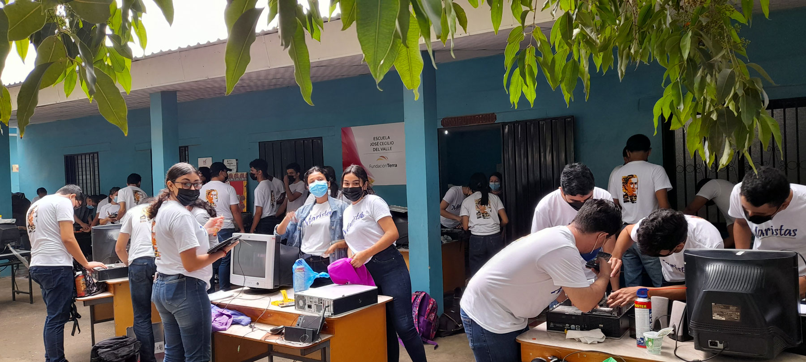
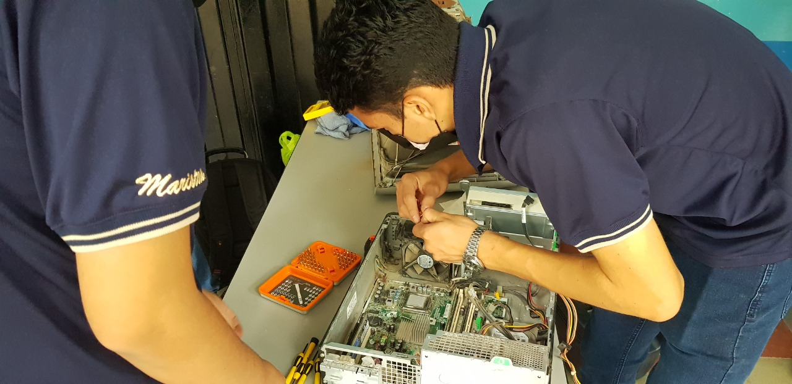

Mantenimiento y reparación

Electrónica

El Bachiller Técnico en Informática se podrá desempeñar en: Centros o departamentos de informática de cualquier institución o empresa, asistiendo al personal en el uso de herramientas de ofimática, en el correcto funcionamiento del equipo así como en la creación de programas que sean necesarios para el manejo de la información de las instituciones o empresas.
La creación de medianas empresas dedicadas a asesorías en sistemas de información, mantenimiento correctivo y preventivo de equipo tecnológico, instalación de redes locales y capacitación sobre tecnología. Talleres o empresas de servicios técnicos en computación. Centros de capacitación en computación. El egresado de este bachillerato podrá demostrar en el campo de trabajo profesionalismo, con una cultura y práctica de capacitación constante según los últimos avances tecnológicos.

Procesadores de texto, hojas de cálculo, diseñador de presentaciones, bases de datos, diseño de publicaciones, navegadores de Internet, servicios de mensajería electrónica, tráfico, respaldo y manejo de archivos de forma local y en red.
Instalación, mantenimiento y reparación de computadoras.
Instalación, mantenimiento y reparación de redes de computadoras.
Creación, Mantenimiento y actualización de sitios Web.